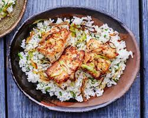

Fish and Rice

Look at that beaut, one of americas favorite American cuisenes
Fish and Rice have been in america for 1 million years, this savory meal goes great with 6-12 shots of tequila, try pairing with Don Julio
Ingredients
- rice
- fish
- soy Sauce
- kimchi
Steps
- put rice in rice cooker
- while rice is cooking apply salt and pepper to raw fish
- heat up a pan on medium-high heat
- add oil to pan
- add seasoned raw fish to pan, may need to adjust heat depending on size of fish
- flip fish once one side is browned
- after other side is browned turn off heat
- once rice is finished plate rice add soy sauce
- add fish on top of bed of rice
- add kimchi to side of plate
- ENJOY!